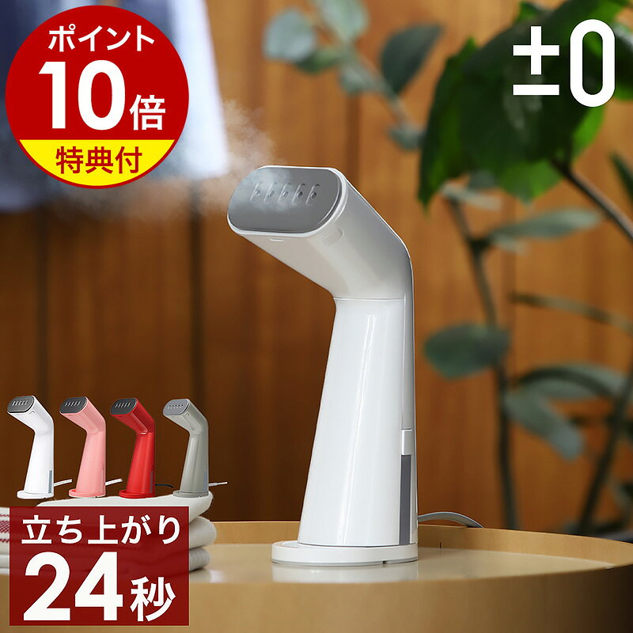
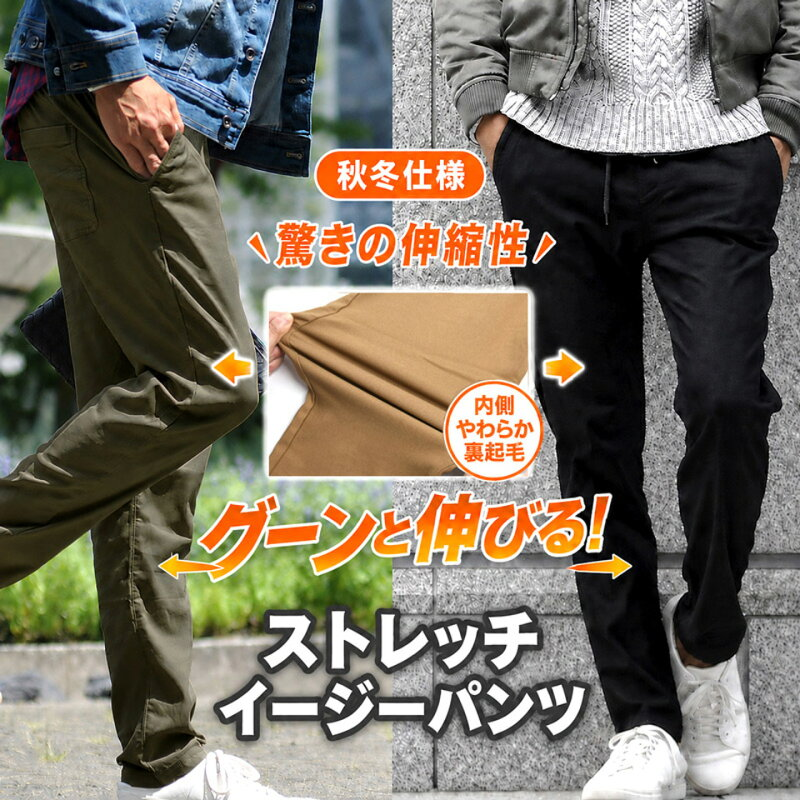
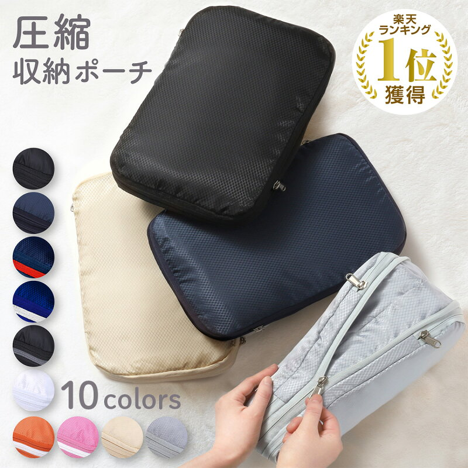
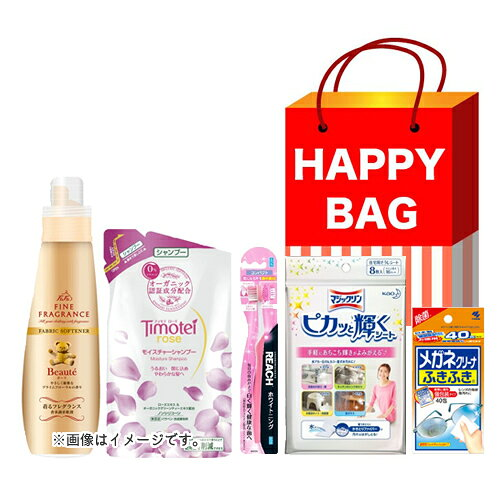
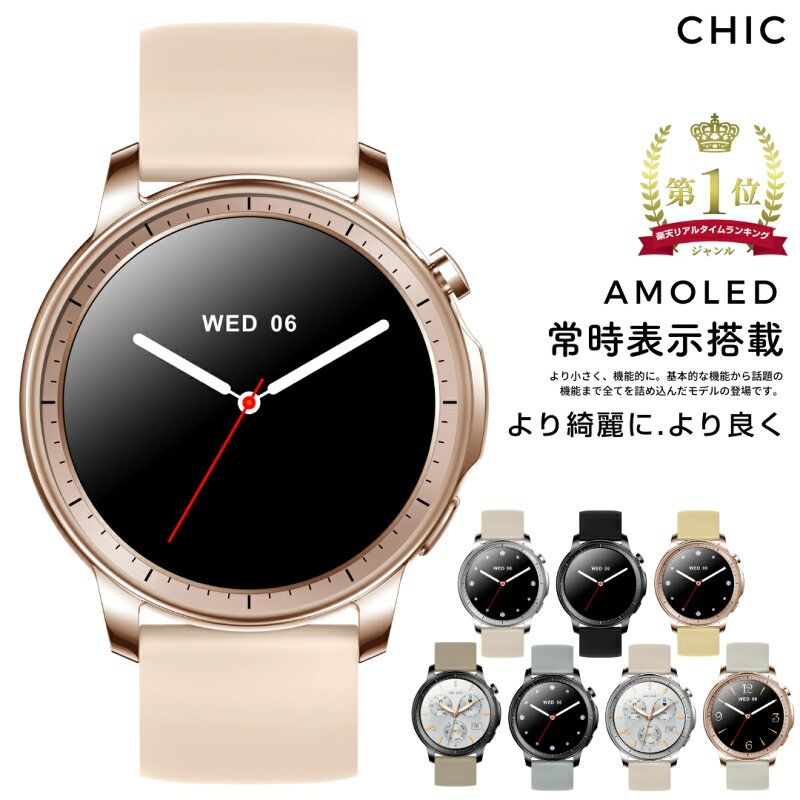
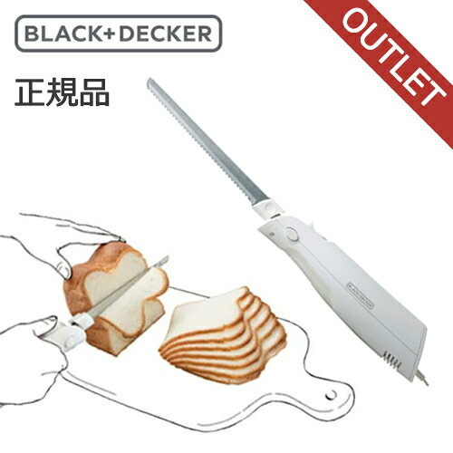
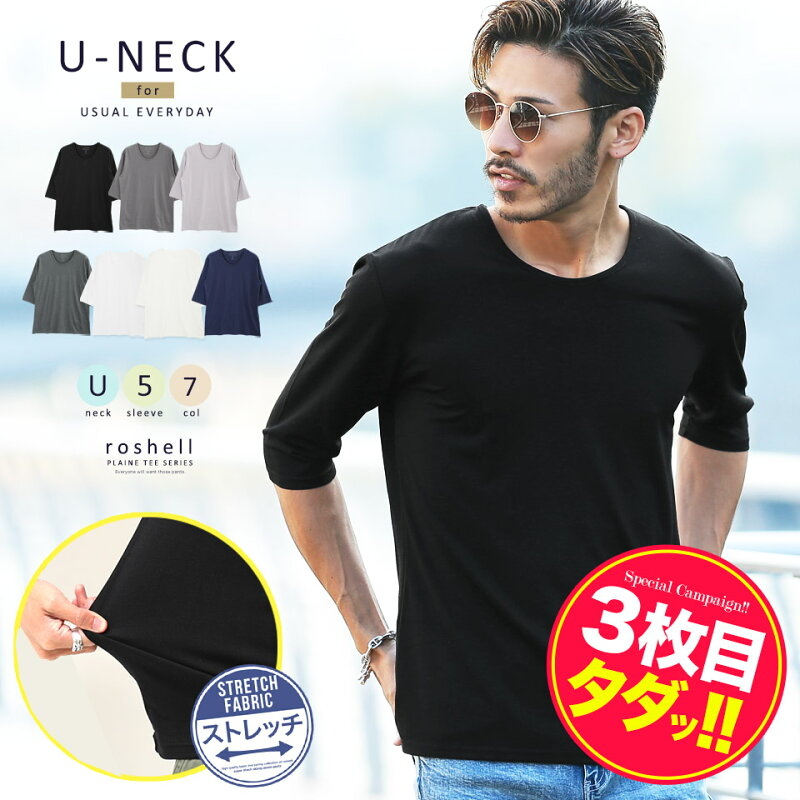
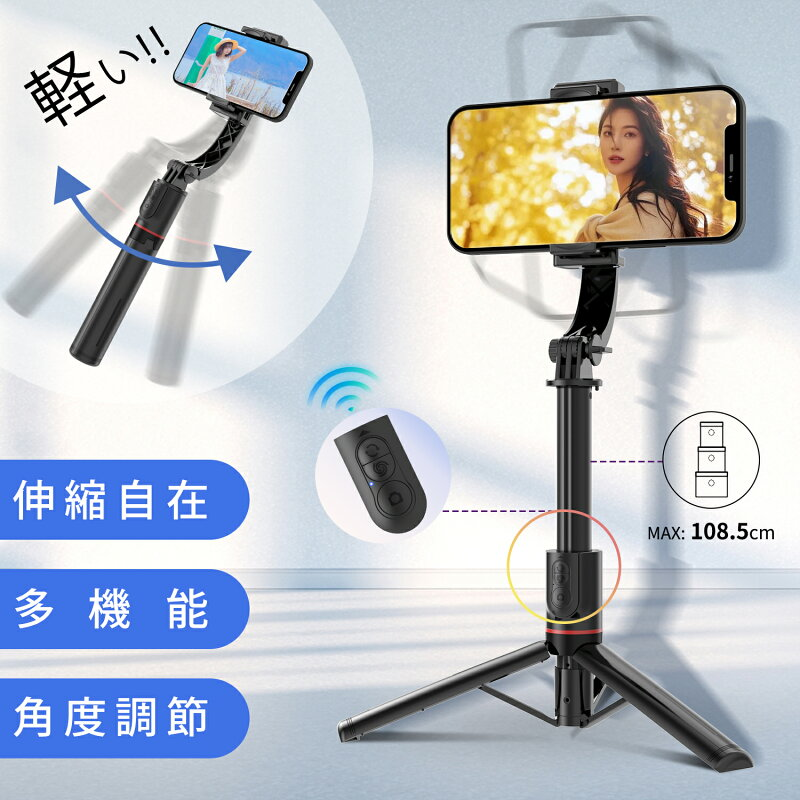

暮らしと、ちょっといいもの。
実際のレビューをもとに、暮らしを少し良くするアイテムと知恵をお届けします。

体型カバーに効くメンズ服選び|首元・柄・サイズ感のコツ
体型が気になる方向けに、サイズ感・色・首元のネックライン・柄の選び方という4つの視点から、着こなしで印象を整える工夫を解説します。
2026-11-18
-
 ガジェット
ガジェット
スマホの電池が減るのが早い方へ バッテリー節約術まとめ
画面の明るさや充電の仕方、位置情報の設定など、日常のちょっとした見直しでスマホのバッテリー消耗を抑える方法を根拠とともに紹介します。
2026-11-17
-
 生活雑貨
生活雑貨
洗濯物を5時間以内に乾かす一人暮らしの部屋干し術
一人暮らしの部屋干しで生乾き臭が気になる方へ。原因となるモラクセラ菌の特徴と、干す場所・干し方・洗濯時の工夫、家電の活用まで、乾く時間を短くするためのポイントをまとめました。
2026-11-17
-
 キッチン ・ PR
キッチン ・ PR
水切りラックのおすすめ3選と選び方｜設置場所で選ぶコツ
水切りラックを選ぶ際のポイントを比較しながら解説。ボトル向けのワイドタイプ、省スペースな吸着タイプ、耐荷重に優れたステンレスタイプの3つのおすすめ商品の特徴を紹介します。
2026-11-16
-
 Huawei・中華ガジェット ・ PR
Huawei・中華ガジェット ・ PR
スマートバンドおすすめ3選と選び方を比較
スマートバンドを選ぶときに注目したい本体の機能・バッテリー持ち、交換ベルトの対応機種、カラー展開を、実際の商品データをもとに比較しながら紹介します。
2026-11-16
-
 Apple最新情報 ・ PR
Apple最新情報 ・ PR
iPhoneケース比較｜人気3選のレビュー評価と選び方
iPhoneケースのおすすめ3選を、レビュー評価や保護スタイルの違いから比較。クリアタイプやマグネット式フルカバーなど、選び方のポイントも紹介します。
2026-11-15
-
 便利家電・最新家電
便利家電・最新家電
家電の買い替えどきを判断する目安と正しい処分方法
冷蔵庫・洗濯機・エアコンの買い替えどきを使用年数や部品保有期間から判断する考え方と、家電リサイクル法に基づく正しい処分方法、無許可業者への注意点をまとめました。
2026-11-15
-
 メンズファッション ・ PR
メンズファッション ・ PR
ダウンジャケットおすすめ3選|暖かさ・軽さ・防寒力で比較
メンズのダウンジャケットを探している方へ、フードの着脱可否やダウンの配合率、レビューの評価・件数から3つの商品を比較しました。防寒力や軽さを重視する人向けの選び方のポイントも紹介します。
2026-11-14
-
 ガジェット ・ PR
ガジェット ・ PR
車載スマホホルダーおすすめ3選と選び方を比較
車載スマホホルダーのおすすめ3選を、固定方式・ワイヤレス充電・角度調整のしやすさという観点から商品データをもとに比較しました。二重固定で充電もできるタイプ、伸縮アームで角度調整しやすい吸盤タイプ、マグネット併用の真空吸着タイプの特徴を紹介しています。
2026-11-14
-
 生活雑貨 ・ PR
生活雑貨 ・ PR
珪藻土バスマットおすすめ3選と選び方|価格・評価で比較
珪藻土バスマットを価格・レビュー評価件数・薄さや吸水性といった観点から3点比較し、選び方のポイントをまとめました。
2026-11-13
-
 キッチン
キッチン
野菜室で野菜がしなびない包み方と立てる向きのコツ
野菜室で野菜を長持ちさせるための、新聞紙やキッチンペーパーを使った包み方、育った向きで立てて保存するコツ、エチレンガスを出す野菜との置き方の工夫をまとめて紹介します。
2026-11-13
-
 Huawei・中華ガジェット ・ PR
Huawei・中華ガジェット ・ PR
スマートウォッチのおすすめ3選と選び方を比較
スマートウォッチを選ぶときに注目したい画面サイズ・バッテリー・通話機能・健康管理機能の違いを、実際の商品データをもとに3機種で比較しながら紹介します。
2026-11-12
-
 Apple最新情報
Apple最新情報
古いiPhone・iPadを下取り・売却前にやること完全ガイド
古いiPhoneやiPadを下取り・売却に出す前に行うべきバックアップ、Bluetooth解除、初期化、Apple ID削除などの準備手順を順番に解説します。
2026-11-12
-

便利家電・最新家電 ・ PR衣類スチーマーおすすめ3選と選び方比較ガイド
衣類スチーマーのおすすめ3選を、立ち上がりの速さ・スチーム機能・携帯性といった選び方のポイントで比較しました。レビュー評価や特徴をもとに、自分に合ったタイプを選ぶための参考情報をまとめています。
2026-11-11
-
 メンズファッション
メンズファッション
革靴・スニーカーの保管とローテーションで長持ちさせる方法
革靴・スニーカーを長持ちさせるには、日々のブラッシングだけでなく「休ませ方」や保管環境も大切です。シューキーパーや除湿剤の使い方、ローテーションのコツを紹介します。
2026-11-11
-
 ガジェット ・ PR
ガジェット ・ PR
モバイルバッテリーおすすめ3選と選び方を比較
モバイルバッテリーのおすすめ3選を、容量・対応コネクタ・携帯性の違いから比較。iPhone/Android対応モデルやケーブル内蔵タイプなど、自分に合った1台を選ぶ参考にしてください。
2026-11-10
-
 生活雑貨
生活雑貨
防災グッズの選び方と保管場所の工夫｜分散備蓄のコツ
防災グッズは何をどれだけ備え、どこに置くかで安心感が変わります。内閣府が示す備蓄量の目安や、分散保管・ローリングストックの考え方を分かりやすく紹介します。
2026-11-10
-
キッチン
一人暮らしの自炊を時短にする調味料と調理器具の収納術
一人暮らしのキッチンで自炊を時短にするための収納の工夫を紹介します。調味料の置き場所、調理器具の立てる収納、動線を意識した配置など、狭いキッチンでも実践しやすいポイントをまとめました。
2026-11-09
-
 Huawei・中華ガジェット
Huawei・中華ガジェット
格安タブレットは何ができる?できないことも解説
1万円台から買える格安タブレットで実際にできること・できないことを、動画視聴やゲーム、Huawei系端末特有の注意点まで含めて整理しました。購入前のチェックポイントもまとめています。
2026-11-09
-
 Apple最新情報
Apple最新情報
iPadを仕事・勉強で使いこなす設定とアクセサリー選び
iPadOS 26のステージマネージャやApple Intelligenceの活用設定と、仕事・勉強に役立つキーボード・Apple Pencilなどアクセサリーの選び方をまとめました。
2026-11-08
-
 便利家電・最新家電
便利家電・最新家電
電気圧力鍋・自動調理鍋でできることとできないこと
電気圧力鍋や自動調理鍋は時短・ほったらかし調理に便利ですが、かき混ぜや揚げ物、お手入れの手間など苦手な部分もあります。できることとできないことを整理して紹介します。
2026-11-08
-

メンズファッション ・ PR裏起毛パンツおすすめ3選|レビューで比較する選び方
裏起毛パンツを探している方向けに、ストレッチ性・シルエット・レビュー評価が異なる3タイプを比較。価格帯やウエスト仕様の違いも紹介し、自分の履き方に合う一着を選ぶ手がかりをまとめました。
2026-11-07
-
 ガジェット
ガジェット
モバイルバッテリーの選び方とPSE規格、長持ちする使い方
モバイルバッテリーは容量・PSE規格の確認が安全選びの基本です。正しい保管方法や2026年4月から変わった飛行機への持ち込みルールまで、根拠に基づいて分かりやすく解説します。
2026-11-07
-

生活雑貨 ・ PR生活雑貨のおすすめアイテム比較 圧縮袋・耳かき・パスポート
旅行用圧縮ポーチ、LEDライト付き耳かき、パスポートカバーの3点を実際のレビュー評価や商品説明から比較し、それぞれの特徴や使い方の違いをご紹介します。
2026-11-06
-

キッチン ・ PRキッチン雑貨おすすめ比較｜福袋・トング・ボトルスタンド3選
キッチンで役立つ日用品福袋・ゆびさきトング・ボトルスタンドの3点を、価格やレビュー評価、商品説明に基づいて比較紹介します。
2026-11-06
-

Huawei・中華ガジェット ・ PRレディース向けスマートウォッチ3選、画面と機能で比較
楽天で人気のレディース向けスマートウォッチ3モデルを、画面サイズ・防水性能・搭載機能・価格帯の違いという観点から比較紹介します。
2026-11-05
-
Apple最新情報
iCloud無料5GBでiPhone写真を管理する整理術
iCloudの無料容量5GBがいっぱいになりやすい理由と、お金をかけずに写真・バックアップを整理して空き容量を確保する具体的な手順を紹介します。
2026-11-05
-

便利家電・最新家電 ・ PR電動ナイフとオールパンゼロで選ぶ便利家電比較
パン切り用の電動ナイフと、人気フライパン「オールパンゼロ」のカラー違い2点を、価格やレビュー評価などの実データをもとに比較紹介します。
2026-11-04
-

メンズファッション ・ PRメンズTシャツ&ニットカーディガン比較|秋のおすすめ3選
ストレッチ素材の5分袖・7分袖Tシャツと、存在感のあるケーブルニットカーディガンを実際のレビュー評価とともに比較。秋口のコーデ選びに役立つ3点をご紹介します。
2026-11-04
-

ガジェット ・ PR自撮り棒ジンバルとハンドストラップ比較3選
スマホ用の自撮り棒ジンバルと、人気のハンドストラップ2種を価格・レビュー評価で比較しました。撮影の安定感重視か、落下防止とデザイン重視かで選び方が変わります。
2026-11-03